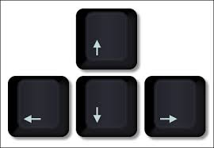

Keys for the robot:
- Up arrow: move forward.
- Down arrow: move backwards.
- Right arrow: move right.
- Left arrow: move left.
- q: pivot right.
- w: pivot left.
- i: increase speed.
- 1: set micro-step to full step.
- 2: set 1/2 micro-step.
- 4: set 1/4 micro-step.
- 8: set 1/8 micro-step.
- r: reset to default values.